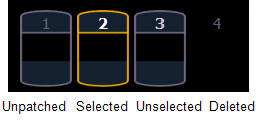
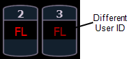

Color Indicators
Ion uses color to indicate the selection state and information about channel/parameter levels.
Channel Numbers/ Channel Headers

- Gray number Unpatched channel number.
- White number Selected channel number.
- Bright White number Channel is parked.
- Gold number Channel is captured.
- Gold outline Selected channel.
- Number with no graphic Deleted channel.
Channel/ Parameter Levels
- Bright Red Manual Data (any data that has been set but not yet stored to an active cue or submaster) on all consoles using the same user ID. When manual channels are used, there will be an advisory that says "Manual Channels" in red in the upper left hand corner of any Live display.
- Dark Red Manual Data (any data that has been set but not yet stored to an active cue or submaster) from other consoles that are using different user IDs.

- Blue The intensity value is higher than in the previous cue.
Non-intensity parameters (NPs) are in blue when any move instruction has occurred. Unmarked. - Green The intensity value is lower than in the previous cue.
Also used in reference marking to indicate a channel is marked. - Magenta Value is unchanged from the previous cue (tracked).
- White The value is blocked.
- White with an underscore Value is auto-blocked.
- Gray Default or the value is a null value (from either {Make Null} or a filter). When nulled, a gray “n” appears next to the value.
- Yellow Data set from a submaster.
Note: When data is in transition (moving), it will appear in a lighter version of its color. This includes up/down fades for intensity, non-intensity moves from cues, submaster, and timed manual changes.